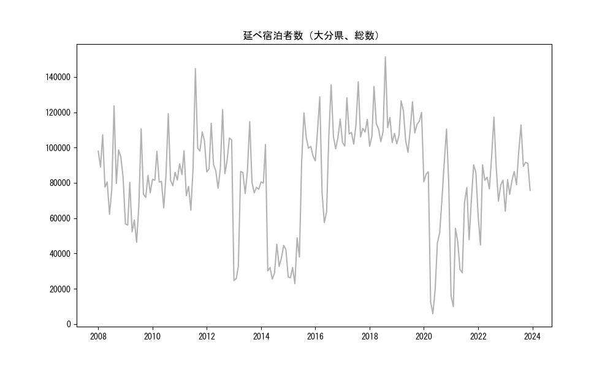
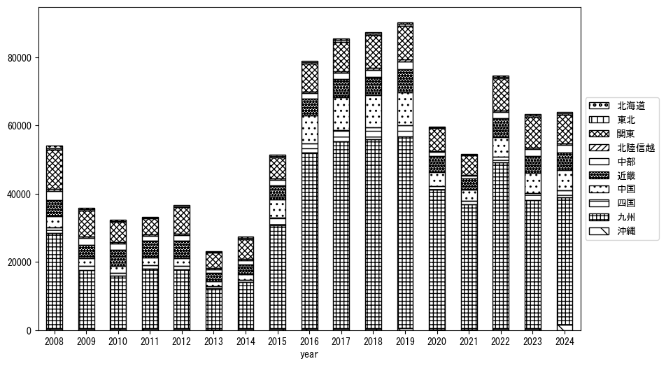
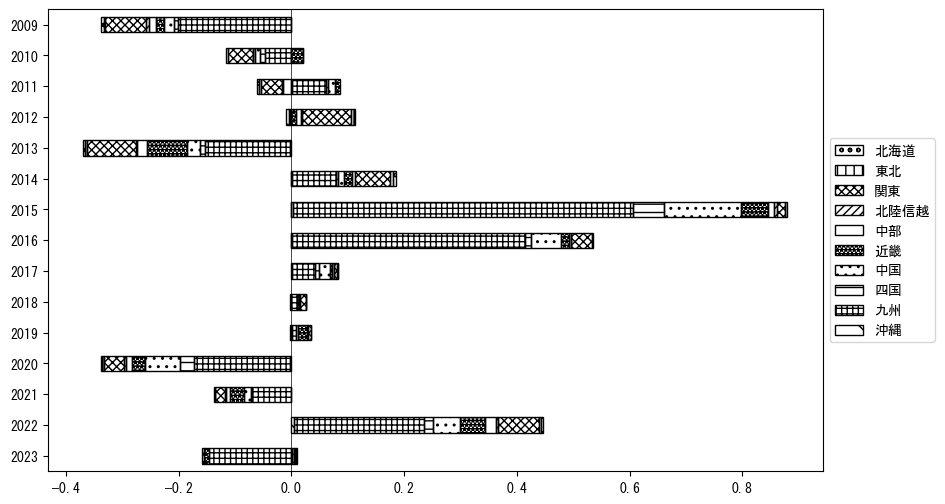
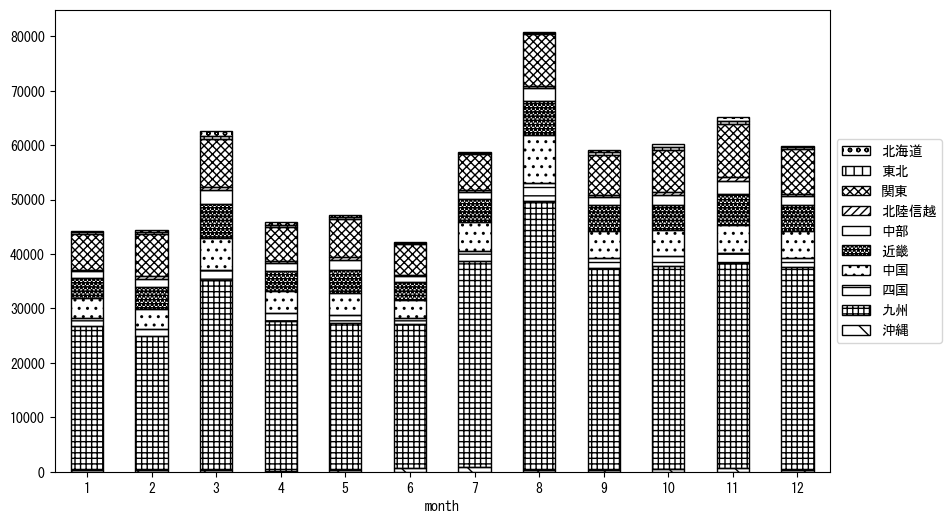
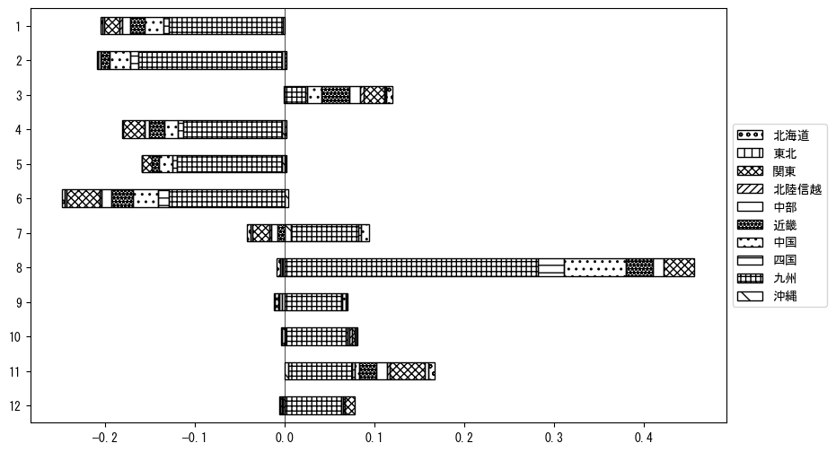

-
トップ
-
大分県
大分県
１．延べ宿泊者（総数）の推移
時系列グラフ

図１：大分県内の従業員数100人以上の宿泊施設での延べ宿泊者数（国外、居住地不詳を含む総数）。
基本統計量
表１：従業員数100人以上の宿泊施設での延べ宿泊者の総数（国外、および居住地不詳を含む）に関する基本統計量。単位は人泊。平均は１か月あたりの平均値を表す。図１に対応。
| 2008年 |
89,154 |
16,375 |
62,153 (6月) |
123,614 (8月) |
| 2009年 |
69,362 |
17,483 |
46,369 (6月) |
110,616 (8月) |
| 2010年 |
84,930 |
12,889 |
65,894 (6月) |
119,176 (8月) |
| 2011年 |
94,405 |
20,598 |
64,543 (6月) |
144,831 (8月) |
| 2012年 |
94,926 |
13,302 |
76,959 (6月) |
121,543 (8月) |
| 2013年 |
69,905 |
27,689 |
24,617 (1月) |
114,705 (8月) |
| 2014年 |
48,367 |
24,880 |
25,433 (6月) |
101,718 (3月) |
| 2015年 |
67,263 |
37,536 |
22,856 (4月) |
119,617 (8月) |
| 2016年 |
99,703 |
24,154 |
57,454 (5月) |
135,597 (8月) |
| 2017年 |
111,826 |
10,890 |
100,840 (2月) |
137,289 (8月) |
| 2018年 |
114,076 |
14,715 |
100,726 (1月) |
151,385 (8月) |
| 2019年 |
112,472 |
9,391 |
97,300 (6月) |
126,481 (3月) |
| 2020年 |
61,644 |
34,138 |
5,799 (5月) |
110,514 (11月) |
| 2021年 |
52,253 |
26,902 |
9,866 (2月) |
90,209 (11月) |
| 2022年 |
80,666 |
17,894 |
44,757 (2月) |
117,254 (8月) |
| 2023年 |
85,342 |
12,635 |
63,885 (1月) |
112,785 (8月) |
２．宿泊者数の重心（年平均の推移）
図２：大分県内の従業員数100人以上の宿泊施設での宿泊者数（国外、居住地不詳を除く）の重心（年平均の推移）。
全画面表示
重心の前年平均からの移動距離と方位、および緯度・経度
表２：重心の前年平均からの移動距離と方位、および緯度・経度。図２に対応。
| 2008年 |
— |
— |
34.2436 |
133.8600 |
| 2009年 |
東北東 |
10.2km |
34.2629 |
133.9686 |
| 2010年 |
西南西 |
5.8km |
34.2497 |
133.9076 |
| 2011年 |
西南西 |
45.9km |
34.0838 |
133.4517 |
| 2012年 |
東北東 |
55.7km |
34.2622 |
134.0169 |
| 2013年 |
西南西 |
25.6km |
34.1757 |
133.7595 |
| 2014年 |
東北東 |
21.5km |
34.2648 |
133.9661 |
| 2015年 |
西南西 |
68.8km |
34.0788 |
133.2539 |
| 2016年 |
西南西 |
80.7km |
33.8148 |
132.4410 |
| 2017年 |
南 |
1.3km |
33.8027 |
132.4407 |
| 2018年 |
東北東 |
10.6km |
33.8394 |
132.5466 |
| 2019年 |
東北東 |
4.8km |
33.8515 |
132.5966 |
| 2020年 |
西 |
15.5km |
33.8301 |
132.4313 |
| 2021年 |
南南西 |
2.5km |
33.8091 |
132.4216 |
| 2022年 |
東北東 |
27.7km |
33.8998 |
132.7006 |
| 2023年 |
東北東 |
24.3km |
33.9738 |
132.9482 |
運輸局別延べ宿泊者数
時系列（年平均）

図３：大分県内の従業員数100人以上の宿泊施設での１か月あたり平均宿泊者数（国外、居住地不詳を除く）の運輸局別内訳。
寄与度（前年からの変化率に対する）

図４：大分県内の従業員数100人以上の宿泊施設での運輸局別宿泊者数（国外、居住地不詳を除く）から求めた寄与度。
３．宿泊者数の重心（月別）
図５：大分県内の従業員数100人以上の宿泊施設での宿泊者数（国外、居住地不詳を除く）の重心（月別）。観測期間は2008年1月から2023年12月まで。
全画面表示
全期間（2008年1月～2023年12月）の平均と月別平均の比較
表３：全期間の平均から月別平均までの移動距離と方位、および緯度・経度。図５に対応。
| 全期間 |
— |
— |
34.0277 |
133.1694 |
| 1月 |
南南西 |
1.5km |
34.0145 |
133.1646 |
| 2月 |
東北東 |
37.7km |
34.1593 |
133.5462 |
| 3月 |
北東 |
30.5km |
34.1986 |
133.4287 |
| 4月 |
北東 |
17.3km |
34.1289 |
133.3123 |
| 5月 |
東北東 |
13.1km |
34.0651 |
133.3040 |
| 6月 |
南西 |
12.3km |
33.9496 |
133.0745 |
| 7月 |
西南西 |
35.6km |
33.8891 |
132.8217 |
| 8月 |
西南西 |
33.5km |
33.8918 |
132.8463 |
| 9月 |
西南西 |
13.9km |
33.9828 |
133.0291 |
| 10月 |
西南西 |
11.0km |
33.9974 |
133.0564 |
| 11月 |
東北東 |
21.1km |
34.0907 |
133.3850 |
| 12月 |
南西 |
12.0km |
33.9642 |
133.0645 |
運輸局別延べ宿泊者数
月別平均（2008年1月～2023年12月）

図６：大分県内の従業員数100人以上の宿泊施設での宿泊者数（国外、居住地不詳を除く）の運輸局別内訳（月別）。
寄与度（全期間の平均から月別平均への変化率に対する）

図７：大分県内の従業員数100人以上の宿泊施設での運輸局別宿泊者数（国外、居住地不詳を除く）から求めた寄与度（月別）。
４．データのダウンロード
出典：観光庁「宿泊旅行統計調査」に収録された「施設所在地、居住地別延べ宿泊者数（従業員数100人以上の施設）」
国土地理院「白地図（地理院タイル）」（図２と図５）